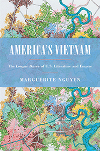

<body bgcolor="#FFFFFF" text="#000000" link="#0000FF" vlink="#CC0000" alink="#CC0000"><center><hr width="350" size="1" align="center" noshade>Understanding the literary history of Vietnamese-American encounters and how it shapes our perceptions of war, race, and empire<hr width="350" size="1" align="center" noshade><p><a href="https://cdcshoppingcart.uchicago.edu/Cart/ChicagoBook.aspx?ISBN=&&PRESS=temple" target="_top">Buy this book!</a> | <a href="https://cdcshoppingcart.uchicago.edu/Cart/Cart.aspx?PRESS=temple" target="_top">View Cart</a> | <a href="https://cdcshoppingcart.uchicago.edu/Cart/Cart.aspx?PRESS=temple" target="_top">Check Out</a></p><p></p></center><!--none//--><h1 class = "booktitle">America's Vietnam</h1> <h1 class = "subtitle">The Longue Dur&#233;e of U.S. Literature and Empire</h1>
<h3>Marguerite Nguyen </h3>
paper: $34.95, Jun 18<BR>EAN:&nbsp;978-1-4399-1612-4<BR><font color=#990033>Not Yet Published Preorder</FONT><font size=-7><br>&nbsp;</font></p><p class="info">cloth: $99.50, Jun 18<BR>EAN:&nbsp;978-1-4399-1611-7<BR><font color=#990033>Not Yet Published Preorder</FONT><font size=-7><br>&nbsp;</font></p><p class="info">e-book: $34.95, Jun 18<BR>EAN:&nbsp;978-1-4399-1613-1<BR><font color=#990033>Not Yet Published Preorder</FONT><font size=-7><br>&nbsp;</font></p></p></td></tr></table>
<BR> <p class="info">252 pp<BR> 6 x 9<BR> 11 halftones, 1 maps <p class="info"><font size=-7>&nbsp;</font></p><p class="info">
</P><BLOCKQUOTE></BLOCKQUOTE>
<p><i>America's Vietnam </i>challenges the prevailing genealogy of Vietnam's emergence in the American imagination-one that presupposes the Vietnam War as the starting point of meaningful Vietnamese-U.S. political and cultural involvements. Examining literature from as early as the 1820s, Marguerite Nguyen takes a comparative, long historical approach to interpreting constructions of Vietnam in American literature. She analyzes works in various genres published in English and Vietnamese by Monique Truong and Michael Herr as well as lesser-known writers such as John White, Harry Hervey, and V&otilde; Phi&#7871;n. The book's cross-cultural prism spans Paris, Saigon, New York, and multiple oceans, and its departure from Cold War frames reveals rich cross-period connections. <i>America's Vietnam</i> recounts a mostly unexamined story of Southeast Asia's lasting and varied influence on U.S. aesthetic and political concerns. Tracking Vietnam's transition from an emergent nation in the nineteenth century to a French colony to a Vietnamese-American war zone, Nguyen demonstrates that how authors represent Vietnam is deeply entwined with the United States' shifting role in the world. As America's longstanding presence in Vietnam evolves, the literature it generates significantly revises our perceptions of war, race, and empire over time.<br>
<P CLASS="top"><A HREF="#top">BACK TO TOP</A></P>&nbsp;
<BR>&nbsp;
&nbsp;<P>
</P><BR>&nbsp;
<H2 class="inpageheading"><A NAME="author bio"></a>About the Author(s)</H2><p><b>Marguerite Nguyen</b> is an Assistant Professor of English at Wesleyan University.<br>
<P CLASS="top"><A HREF="#top">BACK TO TOP</A></P>
<p><h2 class="inpageheading"><a name="subjects"></a>Subject Categories</h2> <p><a href="http://www.temple.edu/tempress/asian_amer.html" target="_top">Asian American Studies</a> <br><a href="http://www.temple.edu/tempress/literature.html" target="_top">Literature and Drama</a> <br><a href="" target="_top"></a> <br><a href="" target="_top"></a> <br><a href="" target="_top"></a> </p>
</p>
<P>
<h2 class="inpageheading">In the Series</h2>�
<p>�<a target="_top" href="http://www.temple.edu/tempress/asam_history.html" OnMouseOver="window.status='Click for other books in this series!';return true;"OnMouseOut="window.status=" ><i>Asian American History and Culture</i></a></P>
<p><p>
Founded by Sucheng Chan in 1991, the Asian American History and Culture series has sponsored innovative scholarship that has redefined, expanded, and advanced the field of Asian American studies while strengthening its links to related areas of scholarly inquiry and engaged critique. Like the field from which it emerged, the series remains rooted in the social sciences and humanities, encompassing multiple regions, formations, communities, and identities. Extending the vision of founding editor Sucheng Chan and emeriti editor Michael Omi, David Palumbo-Liu, K. Scott Wong and Linda Trinh Võ, series editors Cathy Schlund-Vials, Rick Bonus, and Shelley Sang-Hee Lee continue to develop a foundational collection that embodies a range of theoretical and methodological approaches to Asian American studies.
</p></P>
�</P>��
</P>
<p align="center"><a href="https://cdcshoppingcart.uchicago.edu/Cart/ChicagoBook.aspx?ISBN=&&PRESS=temple" target="_top">Buy this book!</a> | <a href="https://cdcshoppingcart.uchicago.edu/Cart/Cart.aspx?PRESS=temple" target="_top">View Cart</a> | <a href="https://cdcshoppingcart.uchicago.edu/Cart/Cart.aspx?PRESS=temple" target="_top">Check Out</a></p><p><font face="Arial" size="1"><a href="copyright.html" onMouseOver="window.status='Web Copyright Policy';return true;" onMouseOut="window.status=''" title="Web Copyright Policy">&copy;</a> 2018 <a href="http://www.temple.edu" target="new" onMouseOver="window.status='Link to Temple University home page';return true;" onMouseOut="window.status=''" title="Link to Temple University home page">Temple University</a>. All Rights Reserved. http://www.temple.edu/tempress/titles/2498_reg.html</font></p>